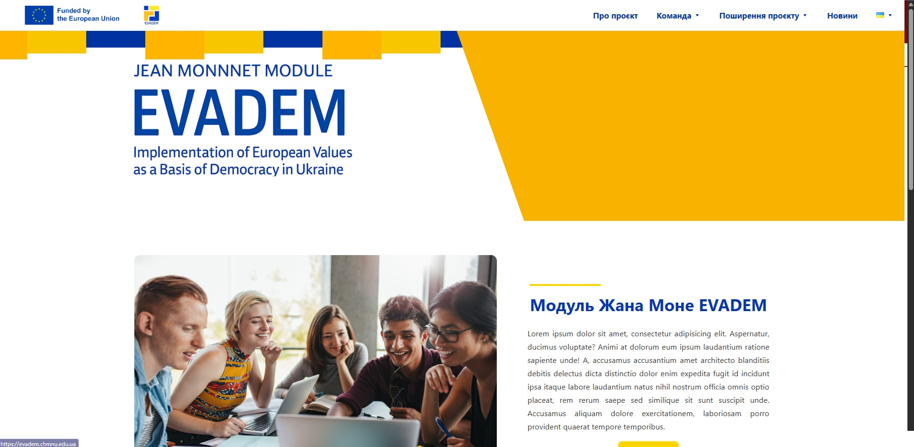

Evadem - International project
An international project from the university, written on a clean, blank topic.
I design and ship custom themes, WooCommerce builds, and performance‑first experiences. Clean PHP, tight CSS, fast TTFB.
Handpicked builds and experiments. Each piece ships with performance budgets and audits.
An international project from the university, written on a clean, blank topic.
Military-themed site, used the NoveLite child theme, edited the code, set up SEO, and used various plugins to improve.
Administered and customized the official website of Petro Mohyla Black Sea National University: theme customization, content management, plugin setup.
Contributed to the development of the new Petro Mohyla Black Sea National University website (Laravel): improved the search functionality, fixed and optimized code, styled frontend elements, and enhanced content structure for better usability and performance.
Tools I actually use in production.
Based in Mykolaiv. I like clean code, small PRs, and shipping early.
I build reliable WordPress systems: consistent naming, small reusable parts, native APIs. My focus is on measurable improvements — speed, conversions, maintainability.
Comfortable collaborating async with designers and backend teams. I maintain high standards for accessibility and performance budgets.
Available for freelance and collaboration.